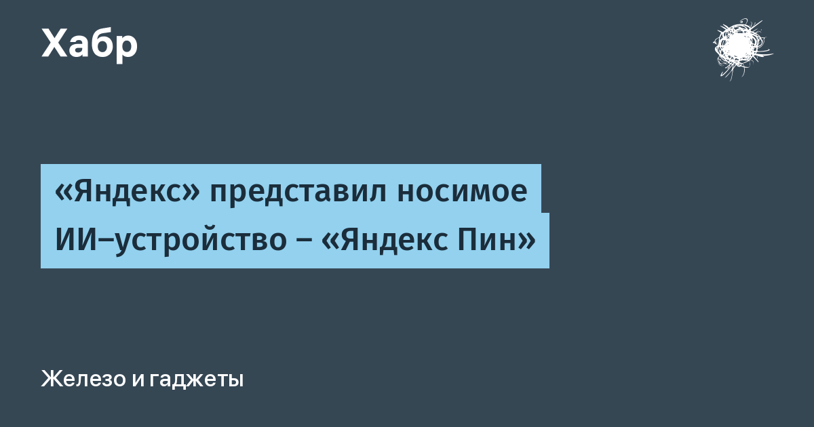

«Яндекс» показал «Яндекс Пин» — маленький носимый гаджет, который крепится на шею или одежду. Его задача — ничего не забыть: «Алиса AI» ведёт мгновенную расшифровку разговора прямо во время беседы, а по её итогу присылает саммари встречи — о чём договорились, какие вопросы остались открытыми. Отдельно устройство вычленяет задачи пользователя, предлагает добавить их в список дел и потом напоминает о сроках. Вечером приходит сводка дня: ключевые события, новые задачи и дела на завтра. По записям можно искать голосом: «Что я обещал сделать сразу после отпуска?»
Главная «взрослая» фича — голосовой вызов ИИ-агента «Действуй!». Нажимаешь кнопку на корпусе и говоришь, что нужно: записать ребёнка на стрижку, подготовить проект договора, найти билеты на спектакль, который посоветовал коллега за обедом. По заверению «Яндекса», агент сам добирает детали из расшифровок прошлых разговоров, выполняет задание и присылает результат в чат.
Внутри — три микрофона, динамик и нейропроцессор, отделяющий речь от шумов, встроенная память на 32 часа записей и аккумулятор необычной D-образной формы: он занимает всё свободное место внутри корпуса и даёт 24 часа непрерывной работы. Запись включается только кнопкой на корпусе — удало её активировать нельзя, и всё время записи горит индикатор. Записи шифруются на серверах «Яндекса» и привязаны к аккаунту: при попытке подключить потерянный «Пин» к чужому аккаунту данные на устройстве удаляются. Компания отдельно заверяет, что записи не уходят на рекламу и персонализацию рекомендаций и не передаются другим сервисам.
«Пин» будет стоить 19 990 рублей и поступит в продажу до конца 2026 года. Сразу после покупки доступно 10 часов записи, дальше — подписка: 50 часов за 690 рублей в месяц или безлимит за 1190 рублей; первые три месяца дают бесплатный пробный период. Летом «Яндекс» регистрировал в Роспатенте знаки «Яндекс Пин», «Яндекс Мемо» и «Яндекс Хронум» — и уже обещает в следующем году ИИ-диктофон, интегрированный с «Яндекс 360». На фоне прошлогодних «Яндекс Дропс» — наушников с «Алисой» — видно, что компания системно строит линейку носимых ИИ-устройств. За рубежом у этой ниши давно есть заметные игроки вроде Limitless и Friend, так что российский гаджет выходит в уже разогретую категорию, но с собственным агентом-исполнителем в связке.